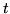

Returning now to the conceptual model of speech production and recognition exemplified by Fig. [*], it should be clear that the extension to continuous speech simply involves connecting HMMs together in sequence. Each model in the sequence corresponds directly to the assumed underlying symbol. These could be either whole words for so-called connected speech recognition or sub-words such as phonemes for continuous speech recognition. The reason for including the non-emitting entry and exit states should now be evident, these states provide the glue needed to join models together.
There are, however, some practical difficulties to overcome. The training data for continuous speech must consist of continuous utterances and, in general, the boundaries dividing the segments of speech corresponding to each underlying sub-word model in the sequence will not be known. In practice, it is usually feasible to mark the boundaries of a small amount of data by hand. All of the segments corresponding to a given model can then be extracted and the isolated word style of training described above can be used. However, the amount of data obtainable in this way is usually very limited and the resultant models will be poor estimates. Furthermore, even if there was a large amount of data, the boundaries imposed by hand-marking may not be optimal as far as the HMMs are concerned. Hence, in HTK the use of HINIT and HREST for initialising sub-word models is regarded as a bootstrap operation1.5. The main training phase involves the use of a tool called HEREST which does embedded training.
Embedded training uses the same Baum-Welch procedure as for the isolated case but rather than training each model individually all models are trained in parallel. It works in the following steps:
Whereas the extensions needed to the Baum-Welch procedure for training sub-word models are relatively minor1.6, the corresponding extensions to the Viterbi algorithm are more substantial.
In HTK, an alternative formulation of the Viterbi algorithm is
used called the Token Passing Model 1.7.
In brief,
the token passing model makes the concept of a state alignment
path explicit. Imagine each state of a HMM at time  holds a single
moveable token which contains, amongst other information,
the partial log probability  . This token then represents
a partial match between the observation sequence
. This token then represents
a partial match between the observation sequence
 to
to
 and the model subject to the constraint that the model
is in state at time . The path extension algorithm represented
by the recursion of equation 1.31 is then replaced by the
equivalent token passing algorithm which is
executed at each time frame . The key steps in this algorithm
are as follows
and the model subject to the constraint that the model
is in state at time . The path extension algorithm represented
by the recursion of equation 1.31 is then replaced by the
equivalent token passing algorithm which is
executed at each time frame . The key steps in this algorithm
are as follows
The point of using the Token Passing Model is that it extends very simply to the continuous speech case. Suppose that the allowed sequence of HMMs is defined by a finite state network. For example, Fig. [*] shows a simple network in which each word is defined as a sequence of phoneme-based HMMs and all of the words are placed in a loop. In this network, the oval boxes denote HMM instances and the square boxes denote word-end nodes . This composite network is essentially just a single large HMM and the above Token Passing algorithm applies. The only difference now is that more information is needed beyond the log probability of the best token. When the best token reaches the end of the speech, the route it took through the network must be known in order to recover the recognised sequence of models.
The history of a token's route through the network may be recorded efficiently as follows. Every token carries a pointer called a word end link. When a token is propagated from the exit state of a word (indicated by passing through a word-end node ) to the entry state of another, that transition represents a potential word boundary. Hence a record called a Word Link Record is generated in which is stored the identity of the word from which the token has just emerged and the current value of the token's link. The token's actual link is then replaced by a pointer to the newly created WLR. Fig. [*] illustrates this process.
Once all of the unknown speech has been processed, the WLRs attached to the link of the best matching token (i.e. the token with the highest log probability) can be traced back to give the best matching sequence of words. At the same time the positions of the word boundaries can also be extracted if required.
The token passing algorithm for continuous speech has been described in terms of recording the word sequence only. If required, the same principle can be used to record decisions at the model and state level. Also, more than just the best token at each word boundary can be saved. This gives the potential for generating a lattice of hypotheses rather than just the single best hypothesis. Algorithms based on this idea are called lattice N-best . They are suboptimal because the use of a single token per state limits the number of different token histories that can be maintained. This limitation can be avoided by allowing each model state to hold multiple-tokens and regarding tokens as distinct if they come from different preceding words. This gives a class of algorithm called word N-best which has been shown empirically to be comparable in performance to an optimal N-best algorithm.
The above outlines the main idea of Token Passing as it is implemented within HTK. The algorithms are embedded in the library modules HNET and HREC and they may be invoked using the recogniser tool called HVITE . They provide single and multiple-token passing recognition, single-best output, lattice output, N-best lists, support for cross-word context-dependency, lattice rescoring and forced alignment .